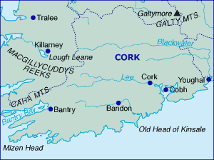

During a trip to Cork City I was inspired by events that ocurred during the last century which was some 78 years ago. As a result I decided to to construct a Web Site based on the historic troubles that Cork City faced in the early 1920s.
Here is a map of the south of Ireland which gives the location of County Cork.

In order to discover more Link on!